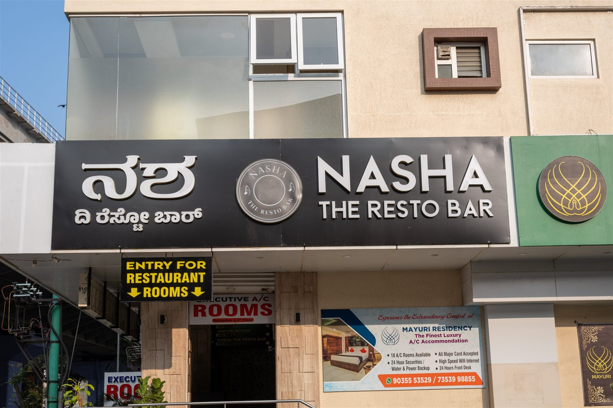

VISIT NASHA / YOUR EVENING STARTS HERE
Good times.
One table away.
Two branches, one NASHA. Choose yours at the top of the page and we’ll take it from here.
COME ON OVER
Nasha resto bar
5, 100 Feet Ring Road, BTM 2nd Stage, BTM Layout, Bengaluru, Karnataka 560076Every day · 12 noon – 1 am
BOOK A TABLE
Let’s save
you a seat.
Prefer our booking partner? Book on District
More than 12 guests? Plan a party or corporate booking
Right here in BTM.
Load Google Maps to explore the area around Nasha.
Loading the map connects to Google Maps.BEFORE YOU COME OVER
A few
good answers.
How can I book a table?
Use the request form on this page or call the restaurant. Your table is confirmed when the team confirms it with you.
Where is Nasha located?
5, 100 Feet Ring Road, BTM 2nd Stage, BTM Layout, Bengaluru, Karnataka 560076. We also have a second branch; switch between them at the top of the page.
What are the opening hours?
Published hours are 12 noon to 1 am, every day. Call ahead to confirm holiday timings or late-night kitchen availability.
Can I plan a birthday, private party or corporate dinner?
Yes. Send the details through our party and corporate enquiry form and the team will call you back. Group seating and special arrangements need confirmation.
Are vegetarian choices available?
Yes. Vegetarian dishes are marked on the menu. Tell the team about any allergies or dietary requirements before ordering.
Is there an age limit?
Alcohol is served only to guests of legal drinking age, and valid photo ID may be requested. Please drink responsibly.
A TABLE. YOUR PEOPLE. A GOOD TIME.